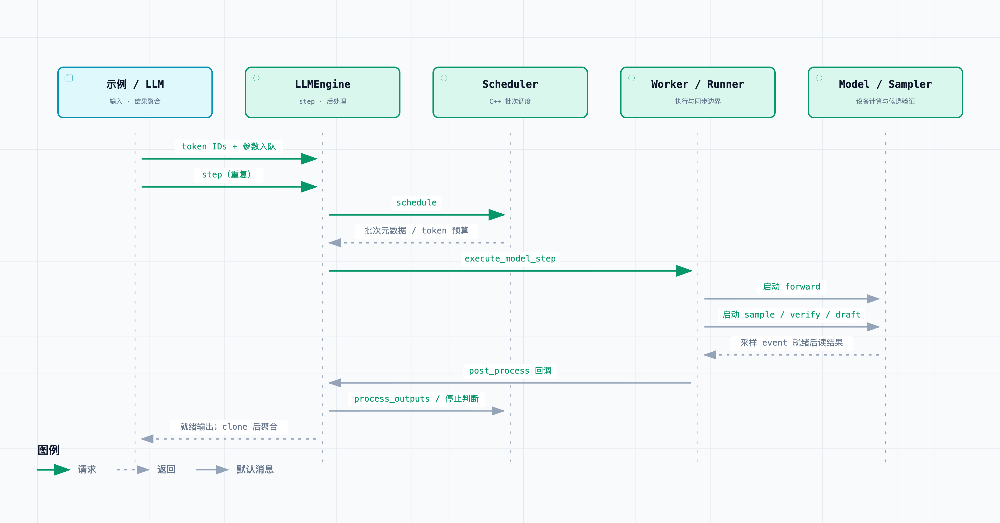

02 / DEEPINFER ATLAS
请求时序
跟随一次真实离线请求，理解批次、prefill、decode、采样和输出的循环。
从真实示例开始
examples/offline_inference.py 先设置运行环境，创建 LLM，再准备 prompts、可选多模态数据和每条请求的 SamplingParams（采样参数）。generate() 接受文本或已编码 token IDs。token 是模型处理的离散单元，不保证等于一个汉字或单词。


一次请求的七个阶段
- 准备输入并提交请求
LLM._add_request()复制采样参数；没有 token IDs 时调用 tokenizer。引擎创建 Sequence 并通过scheduler.add_sequence()入队。有结构化输出约束时，还需等待 matcher 就绪。 - 在批次里获得执行机会
LLM._run_engine()持续调用step()。C++ Scheduler 选择序列、分配缓存块、决定 token 数，并创建 SequenceMetadata。一个请求可跨越很多步，也可能与其他请求共用一个批次。 - 处理上下文：prefill
prefill 计算输入上下文并建立后续生成所需状态；它与之后反复生成的 decode 不同。调度器支持相关 prompt 预算和分块逻辑，不能假定任意输入都在单步处理完。主图将这些 prompt 步折叠为“生成循环”。
- 执行主模型：forward
Worker 调用 ModelRunner 准备张量和缓存视图，再通过 CUDA graph replay 或直接模型调用启动 forward（前向计算）。“CPU 已经调用函数”不表示设备已经算完；该方法明确禁止 CUDA 同步。
- 采样，并为下一轮准备候选
sampling 按参数从模型分布选 token。启用推测解码时，decode 分支先验证上一轮 draft（候选 token），再生成下一轮 draft 与置信度。候选不能直接作为最终输出；accepted token 的数量由实际验证决定。
- 等待就绪、推进状态并构造输出
在消费采样结果前，Worker 等待本轮的
sample_end_evt，执行后处理函数并回调引擎。引擎更新 MTP 信息，调用scheduler.process_outputs()追加输出、推进状态，再通过build_request_outputs()构造输出对象。 - 继续 decode，或结束并收尾
decode 是重复生成后续 token 的阶段。遇到 EOS（序列结束符）、长度上限等条件则结束；否则再次调度。离线循环最后调用
flush_inflight_reqs()排空在途结果，并 clone 池对象后按输入顺序聚合。示例随后显式调用 tokenizer 解码；LLM 也有可选的自动解码路径。
默认 decode 如何跨步重叠
ZOS（Zero-overhead Scheduling）是这里异步批次调度的配置名称，目标是让 CPU 调度与设备计算重叠。NORMAL 引擎默认启用它，但显式环境设置可以覆盖默认值。名称不代表任何硬件、任何负载下都能保证零开销。
在 ZOS decode 的第 N 次 Worker 调用中，实际 CPU 顺序为：launch forward(N) → post_process(N−1) → launch sample(N)，随后保存本步状态。当前步的后处理延到下一次 Worker 调用。prefill 与禁用 ZOS 的步骤则在当前调用内完成本步后处理。
设备执行、CPU 方法调用和可返回输出不应合并成同一条同步时间线。查看重叠示意和元数据修正。
主图省略的并行与异常
DP（Data Parallel）让不同副本处理数据，CP（Context Parallel）切分上下文计算，EP（Expert Parallel）把 MoE 专家分布到设备。Worker 可向 CP group 广播方法，模型内部也包含通信。图中五个参与者是职责分组，不是五台机器、五个线程或固定 rank 数。
为阅读清晰，主图没有画出结构化输出构建等待、视觉预处理失败、资源不足抢占、请求中止、placeholder 步和所有通信同步。要核对边界行为，继续读 Scheduler 和 Worker 原始分支，不能用此图证明无死锁或固定延迟。